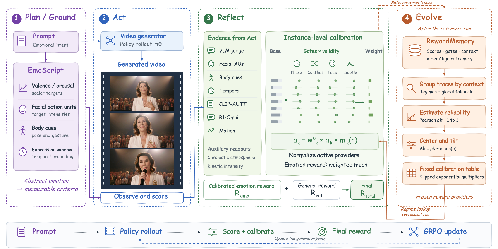
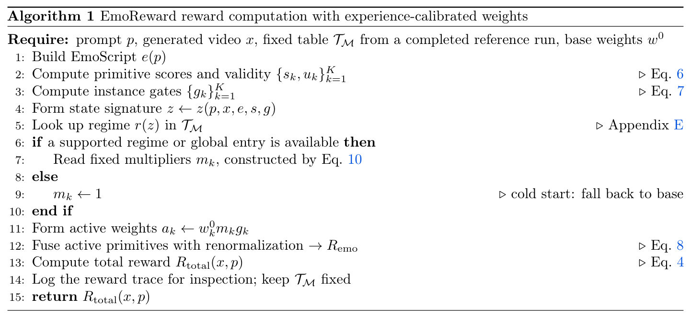
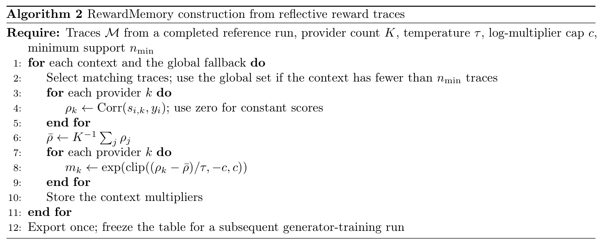
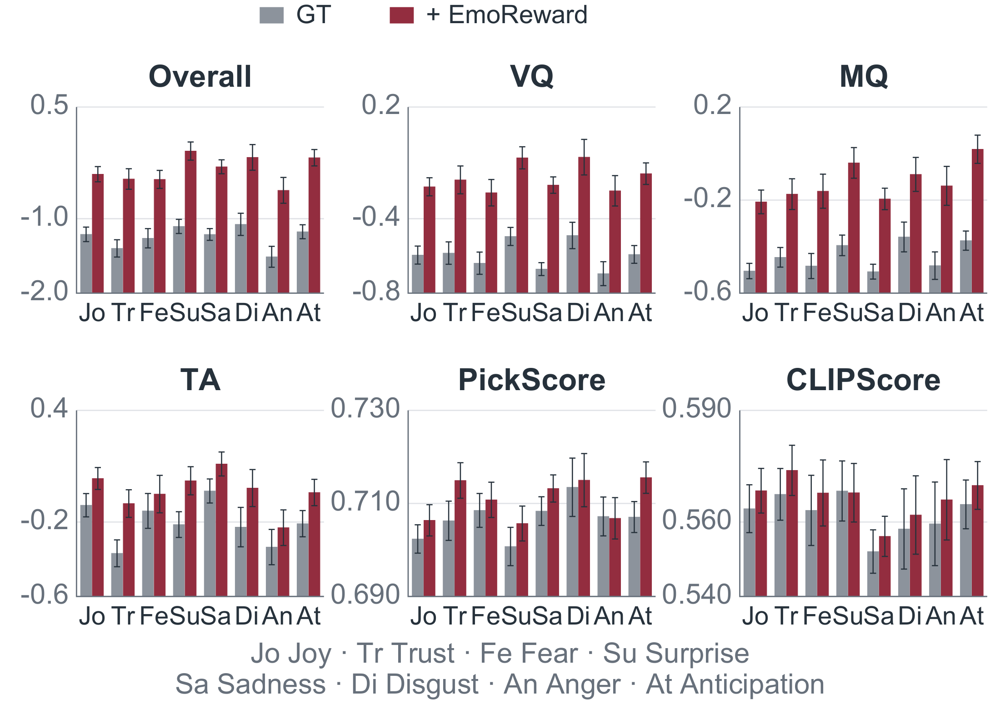
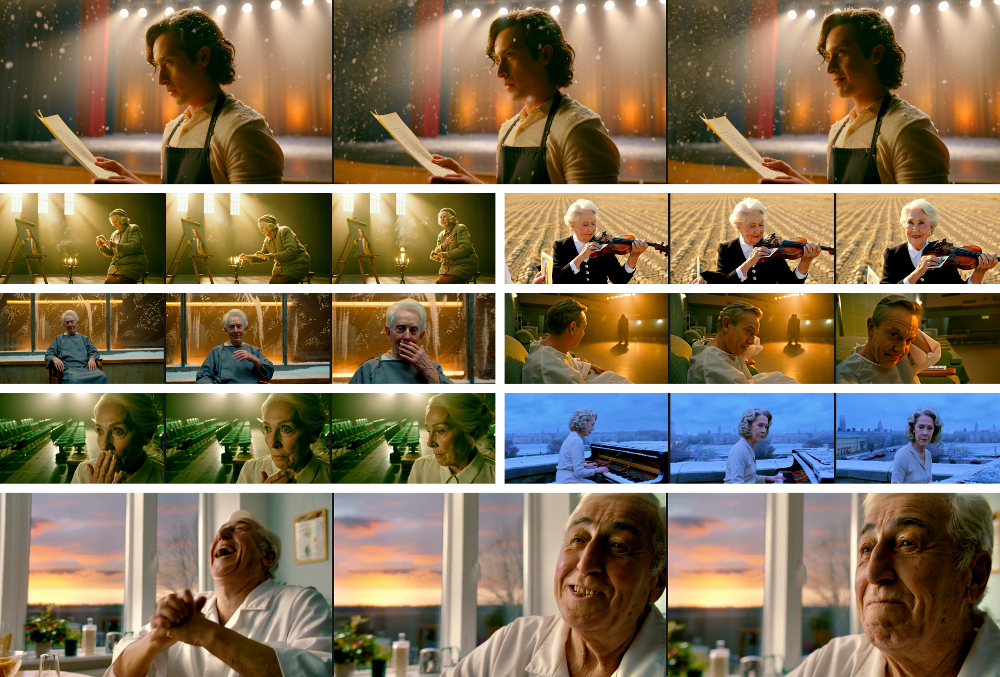
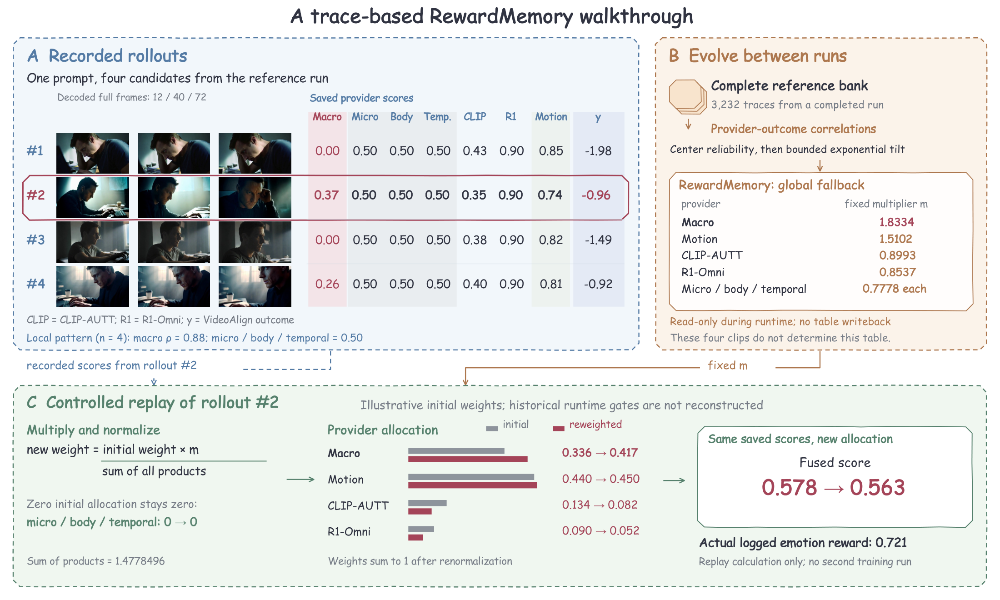
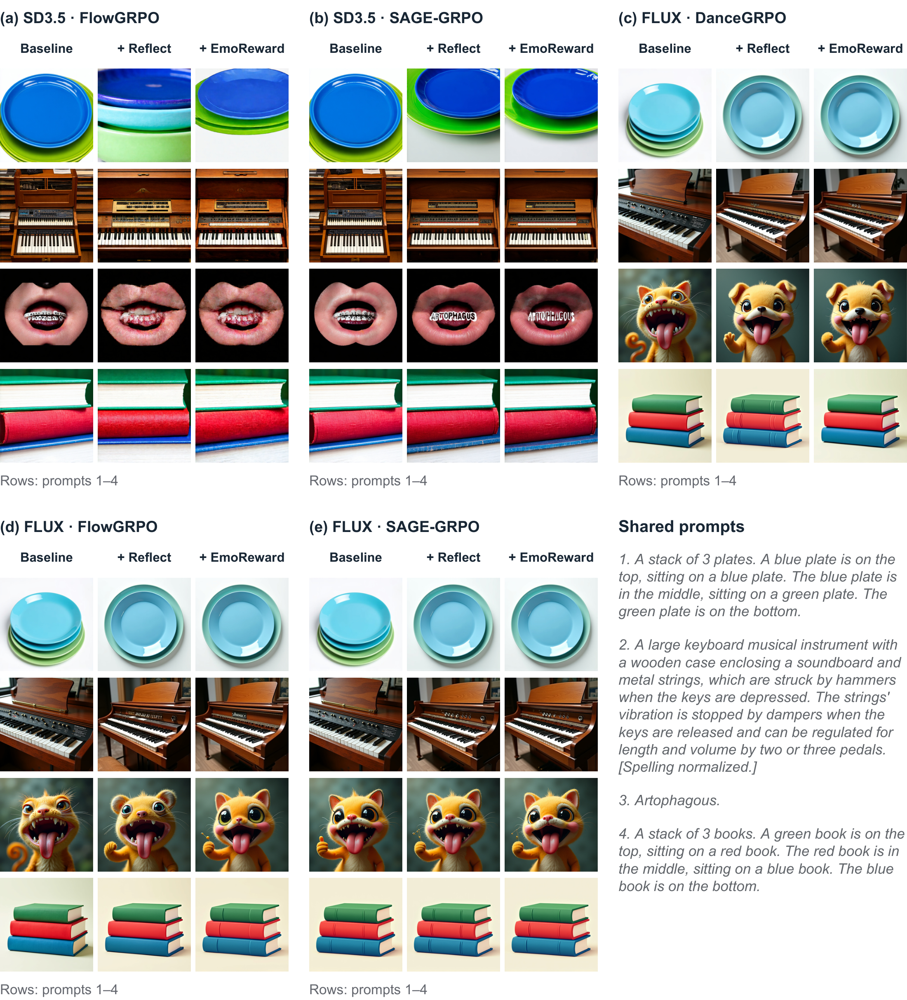

HunyuanVideo 1.5 · Backstage at dusk
GT (pretrained, no RL)
Download clipEmoReward
Download clipScene: backstage at dusk. GT is the pretrained generator without RL.

Group Relative Policy Optimization (GRPO) has advanced generative model post-training in verifiable domains such as code and mathematics, but evaluating video quality, especially emotional expression, often depends on subjective aesthetics and has no uniquely correct target. Existing approaches typically rely on fixed rewards for visual quality, motion quality, and text alignment that poorly capture emotional intent and can invite reward hacking, while reinforcement learning from human feedback (RLHF) is difficult to scale and subject to individual aesthetic differences that complicate the calibration of facial, body motion, and chromatic cues across narrative contexts. We introduce EmoReward, a new self-evolving training mechanism that distills evidence reliability from reward traces collected during an actual training run to adaptively guide multi-reward weight allocation in subsequent training by determining which emotional evidence to trust and how much to weight it. EmoReward first plans specific grounding cues from the emotional prompt to guide evaluation, then uses heterogeneous signal primitives to score the generated video during the act stage. Reflective Reward Gating calibrates their contributions through instance-level gates for phase, face confidence, conflict, and subtlety, then renormalizes weights over the active set to produce the sample's fused reward. RewardMemory then estimates each primitive's reliability from rollout scores and outcomes within each emotional regime in the finished training run, then fixes bounded multipliers that calibrate fusion weights in the next training run without updating reward models. Experiments on HunyuanVideo 1.5 show improvements across multiple RL algorithms and compare EmoReward with other agentic reward methods under SAGE-GRPO. Ablations and transfer experiments on SD 3.5 and FLUX further support adaptive reward calibration for visual generation.
From emotional intent to a calibrated reward: Plan defines what to observe, Act gathers evidence, Reflect decides what to trust, and Evolve calibrates that trust from completed-run experience.

Build an EmoScript: valence and arousal targets, facial action units, body cues, and an expression window.
Seven providers score the generated video and report evidence validity. Act evaluates the video already sampled.
Apply phase, face, conflict, and subtlety gates. Combine them with fixed memory multipliers, then normalize over active providers.
Estimate contextual provider–outcome correlations and export bounded multipliers. Freeze the resulting table for subsequent training.
Each provider’s base weight is adjusted by a memory multiplier and an instance gate. Invalid evidence receives no mass.
During generator training: only the generator receives gradient updates. Providers and RewardMemory remain fixed; lookup neither re-estimates reliability nor writes back to the table.
Algorithm 1 computes a reward for each generated video. Algorithm 2 constructs the memory table from a completed reference run. Their inputs and outputs make the two timescales explicit.


Mix the emotion branch with the original video reward, then compute group-relative advantages for the generator update.
Original algorithm panels reproduced directly from the supplied paper. Click either panel to enlarge. Reliability is agreement with the reference outcome; the between-run construction is distinct from an online memory-update loop.
Original generated clips from the supplied supplementary material. Play each comparison together, or use the individual video controls. These examples are curated qualitative results.
Scene: backstage at dusk. GT is the pretrained generator without RL.
The camera slowly pushes in on a young woman standing at a street corner under the dim yellow glow of a streetlight, captured in a medium close-up. Side backlighting outlines her slender silhouette. Her hand unconsciously tightens around the backpack strap, knuckles turning slightly white, while a faint, forced smile tugs at her lips—never reaching her eyes. Her gaze drifts away from the front, settling on a puddle on the ground, where neon signs flicker and reflect like the instability of her emotions. She slightly turns her head, her lips twitching as if about to speak, but only a soft cough escapes. She lowers her head, her long hair falling to veil half her face. A breeze lifts her strands, and she instinctively reaches up to brush them aside, her fingers pausing in midair before dropping weakly. In the background, blurred traffic and pedestrians move past, their noise isolated beyond the frame, leaving her alone in the shifting light, trembling slightly, as if the entire world has gone silent except for the clear, pounding rhythm of her heartbeat in her ears.
The camera slowly pushes in on a young woman kneeling on ancient bluish stone steps, her back turned to the deepening twilight sky, hands folded gently on her knees, fingertips trembling faintly. Her face is bathed in warm gold by the slanting rays of the setting sun, her eyelashes lowered, her pupils reflecting the flickering oil lamp at the distant temple eaves—a silent mirror to some unspoken obsession. Her lips are slightly pursed, the line of her mouth taut, as if silently praying or suppressing a sigh that threatens to break free. She tilts her head upward, gazing into the night sky, a single tear slipping down her cheek, pausing at her chin, glimmering in the dim light. A breeze stirs her hair, her sleeve lifts slightly, her arm quivers faintly, as though awaiting a response that will never come. Behind her, a quiet courtyard lies still, wild grasses growing beside the stone steps, while in the distance, a bell tolls gently, echoing through the empty dusk. The entire scene is enveloped in a near-sacred sense of solitude.
The camera slowly pushes in, revealing a middle-aged woman standing at the center of the stage, bathed in a spotlight that cascades from the upper side, softly outlining her silhouette with quiet strength. She tilts her head slightly upward, a subtle smile forming on her lips—a smile long held within, unassuming yet powerful enough to pierce the silence. Her gaze sweeps across the audience, her eyes glowing with a gentle warmth, like melting snow in winter, reflecting countless looks of reverence. Her fingers gently trace the emblem on her chest, her fingertips trembling slightly, as if touching a memory sealed by time. Slowly, she raises her hand and grasps the microphone, her lips parting slightly as her voice emerges—low, clear, each word like amber seeping from the depths of her soul. Her eyes never leave the audience, a look of calm acceptance and quiet response, as if saying: every step I’ve taken is worth being seen. Behind her, the applause blurs into soft waves, the melody gentle and hushed, while her face, stretched by light and shadow, resembles a still oil painting, frozen in her moment of radiant glory.
Reflect denotes the variant without RewardMemory. The DanceGRPO configuration reported in the main numerical table uses Reflect; the FlowGRPO and SAGE-GRPO guided rows use complete EmoReward.
Across the evaluated optimizer configurations, all four VideoAlign heads improve on the stated comparison subset. PickScore and CLIPScore show smaller, mixed changes.
HunyuanVideo 1.5; a selected, outcome-conditioned subset of 302 emotional prompts disjoint from training. These results describe the selected cases rather than an unbiased full benchmark. VideoAlign is also an optimization objective, so agreement with it is distinct from independent emotional fidelity.
| Method | Overall | VQ | MQ | TA | PickScore | CLIPScore |
|---|---|---|---|---|---|---|
| GT (reference) | -1.1938±0.0520 | -0.5899±0.0255 | -0.4289±0.0220 | -0.1750±0.0363 | 0.7059±0.0018 | 0.5623±0.0037 |
| DanceGRPO | -1.2812±0.0513 | -0.6392±0.0230 | -0.3867±0.0235 | -0.2554±0.0357 | 0.7177±0.0018 | 0.5675±0.0036 |
| + Reflect | -0.9594±0.0574 | -0.5187±0.0304 | -0.2054±0.0298 | -0.2354±0.0364 | 0.7039±0.0017 | 0.5565±0.0037 |
| FlowGRPO | -0.7719±0.0569 | -0.3567±0.0290 | -0.2753±0.0271 | -0.1398±0.0361 | 0.7061±0.0019 | 0.5634±0.0036 |
| + EmoReward | -0.5376±0.0556 | -0.3398±0.0291 | -0.2302±0.0275 | 0.0323±0.0356 | 0.7115±0.0018 | 0.5605±0.0037 |
| SAGE-GRPO | -0.8269±0.0532 | -0.4106±0.0261 | -0.3275±0.0263 | -0.0888±0.0360 | 0.7091±0.0019 | 0.5624±0.0036 |
| + EmoReward | -0.2624±0.0600 | -0.1710±0.0304 | -0.0926±0.0324 | 0.0012±0.0364 | 0.7107±0.0018 | 0.5663±0.0035 |
VQ: visual quality; MQ: motion quality; TA: text alignment. GT is the pretrained generator without RL. Bold indicates an increase over the corresponding optimizer baseline. DanceGRPO uses Reflect; FlowGRPO and SAGE-GRPO use complete EmoReward. PickScore and CLIPScore use the paper’s exported scaling.


Eighteen participants rated three methods on 30 prompts using Bad / Normal / Good for emotion fidelity, temporal coherence, and visual quality. Each method–criterion block contains 540 judgments.
| Method | Emotion fidelity | Temporal coherence | Visual quality | ||||||
|---|---|---|---|---|---|---|---|---|---|
| Bad ↓ | Normal | Good ↑ | Bad ↓ | Normal | Good ↑ | Bad ↓ | Normal | Good ↑ | |
| GT | 21.9% | 34.8% | 43.3% | 23.5% | 37.8% | 38.7% | 25.2% | 38.5% | 36.3% |
| SAGE-GRPO | 31.5% | 15.6% | 53.0% | 28.9% | 19.6% | 51.5% | 30.9% | 24.1% | 45.0% |
| SAGE-GRPO + EmoReward | 15.4% | 24.6% | 60.0% | 20.2% | 25.6% | 54.3% | 15.9% | 26.9% | 57.2% |
Descriptive aggregate percentages, rounded to one decimal place. Bold marks the highest Good share. Response-level records are unavailable; no confidence intervals or statistical significance are claimed.
The seven-policy study fixes the backbone and optimization budget while changing the reward policy. Routing and fusion arms are controlled policies, rather than full reproductions of other systems. GT is shown as an additional no-RL reference.
| Reward method | SNR* | Sel. ↑ | EF ↑ | GD ↑ | GR ↑ | core ↑ | emo ↑ |
|---|---|---|---|---|---|---|---|
| VideoAlign | 0.378 | 0.307 | 0.518 | 0.000 | 0.197 | 0.238 | 0.308 |
| Single provider | 2.403 | 0.314 | 0.454 | 0.305 | 0.147 | 0.302 | 0.340 |
| Random routing | 1.105 | 0.340 | 0.000 | 0.109 | 0.146 | 0.085 | 0.064 |
| Round-robin | 1.217 | 0.376 | 0.291 | 0.126 | 0.381 | 0.266 | 0.272 |
| Fixed fusion | 0.773 | 0.371 | 0.026 | 0.060 | 0.653 | 0.246 | 0.191 |
| EmoReward (w/o RewardMemory) | 0.451 | 0.293 | 1.000 | 0.011 | 0.000 | 0.337 | 0.503 |
| EmoReward (w RewardMemory) | 7.022 | 0.428 | 0.767 | 1.000 | 1.000 | 0.922 | 0.884 |
SNR* is relative reward dispersion, not gradient quality. Sel. is concentration of nine absolute provider–outcome correlations, not applied-weight entropy. EF uses an ImageReward preference proxy; GD normalizes dispersion; GR combines selectivity with evaluator agreement. core and emo are the paper’s specified composites over this seven-policy comparison. Bold marks column maxima. See the paper’s reward-gating appendix for definitions, row references, sample counts, and verification limits.
The camera slowly pushes in, revealing a middle-aged woman standing at the center of the stage, bathed in a spotlight that cascades from the upper side, softly outlining her silhouette with quiet strength. She tilts her head slightly upward, a subtle smile forming on her lips—a smile long held within, unassuming yet powerful enough to pierce the silence. Her gaze sweeps across the audience, her eyes glowing with a gentle warmth, like melting snow in winter, reflecting countless looks of reverence. Her fingers gently trace the emblem on her chest, her fingertips trembling slightly, as if touching a memory sealed by time. Slowly, she raises her hand and grasps the microphone, her lips parting slightly as her voice emerges—low, clear, each word like amber seeping from the depths of her soul. Her eyes never leave the audience, a look of calm acceptance and quiet response, as if saying: every step I’ve taken is worth being seen. Behind her, the applause blurs into soft waves, the melody gentle and hushed, while her face, stretched by light and shadow, resembles a still oil painting, frozen in her moment of radiant glory.
VideoAlign, semantic emotion, motion naturalness, and a balanced pool expose complementary evidence. Weights and curricula also differ, so this comparison does not isolate each channel’s causal effect.
The camera slowly pushes in, revealing a middle-aged woman standing at the center of the stage, bathed in a spotlight that cascades from the upper side, softly outlining her silhouette with quiet strength. She tilts her head slightly upward, a subtle smile forming on her lips—a smile long held within, unassuming yet powerful enough to pierce the silence. Her gaze sweeps across the audience, her eyes glowing with a gentle warmth, like melting snow in winter, reflecting countless looks of reverence. Her fingers gently trace the emblem on her chest, her fingertips trembling slightly, as if touching a memory sealed by time. Slowly, she raises her hand and grasps the microphone, her lips parting slightly as her voice emerges—low, clear, each word like amber seeping from the depths of her soul. Her eyes never leave the audience, a look of calm acceptance and quiet response, as if saying: every step I’ve taken is worth being seen. Behind her, the applause blurs into soft waves, the melody gentle and hushed, while her face, stretched by light and shadow, resembles a still oil painting, frozen in her moment of radiant glory.

Image transfer covers SD 3.5 and FLUX with three optimizers. Results depend on the objective: calibration improves SD 3.5–DanceGRPO on HPSv3, while FLUX’s HPSv3-optimized baseline remains strongest on that metric. Unequal SD 3.5 training budgets limit causal attribution.

@misc{zheng2026emoreward,
title={EmoReward: Self-Evolving Reward Calibration for Emotional Video Generation RL},
author={Zheng, Mingzhe and Wu, Yue and Tan, Jing and Zou, Chang and Jiang, Dengyang and Tian, Zeyue and He, Xuanhua and Xu, Ryan and Ge, Yunyang and Ji, Sihui and Lin, Yunlong and Pan, Kaihang and Yan, Hongru and Chen, Sixiang and Wang, Dianyi and Zhang, Julian and Kong, Weijie and Li, Changlin and Guo, Lanqing and Zhong, Zhao and Chen, Qifeng and Yang, Harry},
year={2026}
}